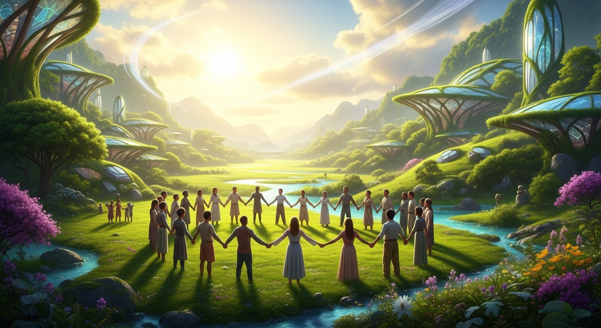

कवि: रामधारी सिंह 'दिनकर'
मूल रचना: 'कुरुक्षेत्र' महाकाव्य के छठे सर्ग से संकलित
सारांश: 'स्वर्ग बना सकते हैं' कविता एक प्रगतिवादी और मानवतावादी रचना है। इसमें भीष्म पितामह युधिष्ठिर को उपदेश देते हुए कहते हैं कि यह धरती किसी की खरीदी हुई दासी नहीं है, इस पर सभी का समान अधिकार है। जब तक समाज में संसाधनों और सुखों का समान रूप से वितरण नहीं होगा, तब तक अशांति और संघर्ष समाप्त नहीं होंगे। मनुष्य अपने स्वार्थ और भय के कारण प्रकृति के संसाधनों को इकट्ठा करने में लगा है। यदि वह इस प्रवृत्ति को छोड़ दे, तो यह धरती भी स्वर्ग जैसी सुंदर और सुखद बन सकती है।
शब्दार्थ: धर्मराज = युधिष्ठिर; क्रीत = खरीदी हुई; जन्मना = जन्म से; समीरण = हवा; आशंका = डर/भय।
प्रसंग: इन पंक्तियों में भीष्म पितामह युधिष्ठिर (धर्मराज) को समझाते हुए धरती पर सभी मनुष्यों के समान अधिकार की बात कर रहे हैं।
भावार्थ: भीष्म पितामह युधिष्ठिर को संबोधित करते हुए कहते हैं कि हे धर्मराज! यह धरती किसी की खरीदी हुई गुलाम (दासी) नहीं है। इस धरती पर जन्म लेने वाले सभी मनुष्य जन्म से ही एक-दूसरे के समान हैं और उन सभी का इस भूमि पर बराबर का अधिकार है। जिस प्रकार प्रकृति की ओर से स्वतंत्र रूप से प्रकाश (सूर्य की रोशनी) और मुक्त हवा (समीरण) सबको बिना किसी भेदभाव के मिलनी चाहिए, ठीक उसी प्रकार प्रत्येक मनुष्य को बिना किसी बाधा के अपनी उन्नति और विकास करने का समान अवसर मिलना चाहिए। उनका जीवन भी भय, शंका और असुरक्षा की भावना से पूरी तरह मुक्त होना चाहिए।
शब्दार्थ: विघ्न = बाधाएँ; पथ = रास्ता; न्यायोचित = न्याय के अनुसार उचित; सुलभ = आसानी से प्राप्त; भव = संसार।
प्रसंग: कवि ने यहाँ स्पष्ट किया है कि जब तक समाज में न्याय और समानता स्थापित नहीं होती, तब तक शांति असंभव है।
भावार्थ: कवि कहते हैं कि सभी को समान अधिकार और स्वतंत्रता मिलने के इस मार्ग में आज भी अनेक बाधाएँ (विघ्न) पहाड़ बनकर खड़ी हैं। स्वार्थ, भेदभाव और लालच जैसे पहाड़ों ने मानवता के विकास का रास्ता रोक रखा है। जब तक इस धरती के प्रत्येक मनुष्य को उसका न्यायोचित सुख (वह सुख जिसका वह हक़दार है) आसानी से प्राप्त नहीं हो जाता, तब तक इस धरती पर चैन और शांति स्थापित नहीं हो सकती। असमानता और अन्याय के कारण समाज में हमेशा असंतोष और विद्रोह की आग सुलगती रहेगी।
शब्दार्थ: मनुज = मनुष्य; सुख-भाग = सुख का हिस्सा; सम = समान/बराबर; शमित = शांत; कोलाहल = शोर/अशांति; भोग-संचय = सुख-सुविधाओं को इकट्ठा करना।
प्रसंग: इस पद्यांश में कवि मनुष्य की स्वार्थी और लालची प्रवृत्ति पर प्रहार कर रहे हैं जो समाज में संघर्ष को जन्म देती है।
भावार्थ: भीष्म पितामह कहते हैं कि जब तक हर मनुष्य के सुख का हिस्सा बराबर नहीं हो जाता, अर्थात् संसाधनों का बँटवारा समानता के आधार पर नहीं होता, तब तक दुनिया में यह अशांति और कोलाहल शांत नहीं हो सकता। लोगों के बीच का आपसी संघर्ष तब तक कम नहीं होगा। परंतु मनुष्य इस सच्चाई को भूल चुका है और एक-दूसरे के प्रति अविश्वास, शंका और भय में फँसकर रह गया है। इसी भय और असुरक्षा की भावना के कारण हर व्यक्ति केवल अपने स्वार्थ के बारे में सोच रहा है और अधिक से अधिक सुख-सुविधाओं तथा धन को इकट्ठा (भोग-संचय) करने की अंधी दौड़ में लगा हुआ है।
शब्दार्थ: विकीर्ण = फैले हुए/बिखरे हुए; जगत = संसार; तुष्ट = संतुष्ट; पल में = क्षण भर में।
प्रसंग: कविता के अंत में कवि आशावादी स्वर में कहते हैं कि मनुष्य चाहें तो आपसी प्रेम और त्याग से इसी धरती को स्वर्ग के समान सुंदर बना सकते हैं।
भावार्थ: कवि कहते हैं कि ईश्वर ने इस धरती पर सुख और आनंद के इतने साधन चारों ओर बिखेर रखे हैं (विकीर्ण कर रखे हैं) कि यदि मनुष्य अपनी स्वार्थ-प्रवृत्ति छोड़ दे, तो उनका उपभोग करने के लिए मनुष्यों की संख्या भी कम पड़ जाएगी। प्रकृति के पास सबकी आवश्यकताएँ पूरी करने के लिए पर्याप्त संसाधन हैं। यदि लोग लालच और धन-संचय छोड़कर संसाधनों का न्यायपूर्ण बँटवारा करें, तो संसार का हर व्यक्ति संतुष्ट (तुष्ट) हो सकता है और सभी को समान रूप से सुख प्राप्त हो सकता है। यदि मानव समाज ऐसा निश्चय कर ले और प्रेम-सद्भाव से रहे, तो वे पल भर में इस दुखों से भरी धरती को ही एक आदर्श और सुखद 'स्वर्ग' में बदल सकते हैं।